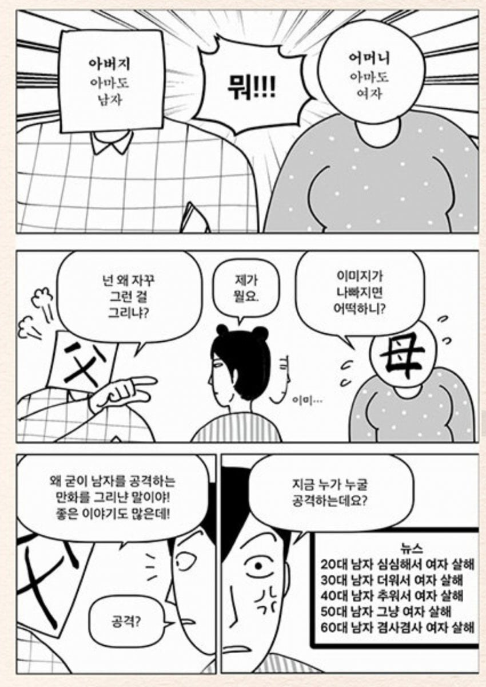

한국에 남자가 너무 많아서
민지형·임소라·류시은·정재윤·미역의 효능·들개이빨 지음
라우더북스 | 275쪽 | 1만9000원
뭐. 한국은 언론과 사상의 자유가 있으니까. 라고 생각을 하지만. 언론 틀어쥐고, 예산 받아가고 배타적인건 좀 많이 꼽긴하지.
저런거 그리는애들은 자캐도 하나같이 개 ㅈ같이 그리냐
지도 무의식 깊은 곳에선 지가 병신 이란걸 알아서 그럼
어떻게 보면 불쌍한 거지
주갤 아재들이랑 성별만 바뀐 건데
이런 사람들 다 잡아다 어딘가에 격리구 만들어서 자기들끼리 살게 하면 좋겠는데 이런 사람들 똥구녕에 발리는 수도세도 내가 내고있다고 생각하면 정말 이렇게 더러운게 없더
쟤네 점점 사라지고 있다 아님?
ㅇㅇ 자연발생 하는 도태유전자가 있어서 가끔 저럼
자신의 정념을 분출하기만하는 수준이지 뭐
길거리에서 싸지르는것처럼
지나가는 우리는 얼굴에 분출된게 묻어서 불쾌한건데
쟤는 영원히 모르겠지 ㅋ
이런건 소비도 보지도 말고 ㅂㄱ만 가져오는게 답일듯
자식농사 망햇네
트위터에서 살면 저런거만 보니까 저렇게 생각하는게 자연스러울지도
저건 그냥 피해망상임... 병인거야
요이~
대놓고 정병인 애들은 그냥 불쌍하지ㅋㅋㅋ
자신을 투사로 포장할 거면 좀 세련되게 하던가
난 사회정의를 위해 싸우고 있어 라고 자기합리화와 자기최면을 걸 거면 좀 더 그럴듯한 대의명분을 가지던가
지 스스로를 방구석 여포 투덜이처럼 그려놓고 호응을 바라나?
그림도 못그리는데 멍청하기까지하네
Sns의 폐혜인거같아
인터넷의 폐혜라기엔 그전에 천리안 나우누리 라이코스 야후 다음 네이버 쓰던 세대들도 이렇진 않았거든..
내가 이런 페미 만화들 보다보니 특징이 잡히는게 작가 오너 캐릭들이 죄다 무심한눈 ㅡㅡ 아님 똥그란 ㅇㅇ 눈에 난 전혀 무엇에도 데미지 받지않고 쿨시크해 이런 주장하는듯한 캐릭들이 대부분임
한국여자가 저지르는 살인은 남자의 두배가 넘는다
이게 팩트
이거 줄여주려고 아이 살해를 별도로 빼는거지
표독하다 표독해
평생 그리세요~
지~이랄
정신병...
살처분좀
지가 본것만 믿는거지 머...